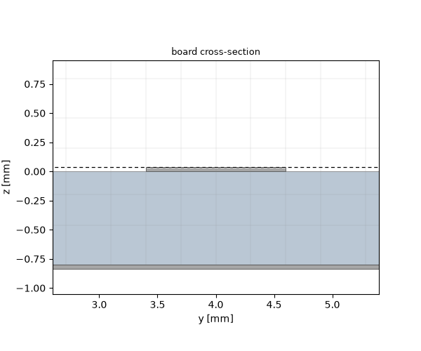
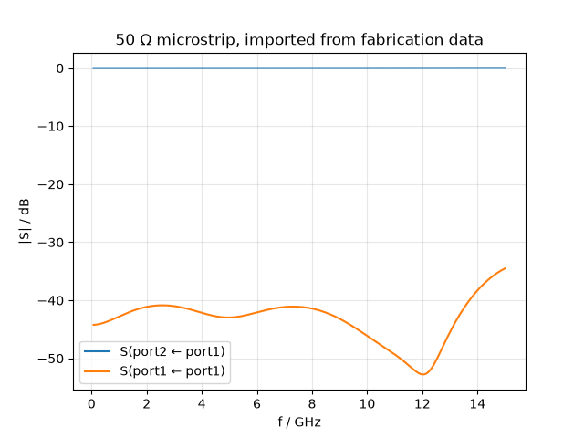
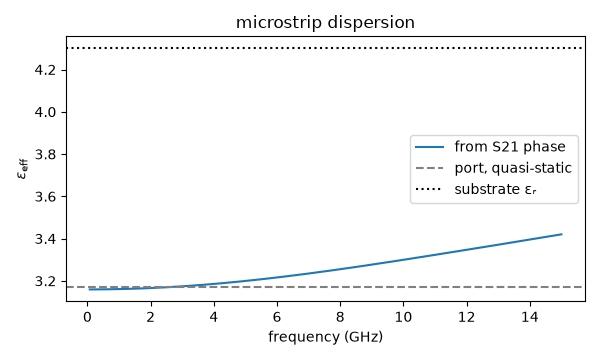

Note
Go to the end to download the full example code.
Importing a circuit board#
Tutorial 09 built a microstrip line out of three bricks. That works for a line, and stops working the moment the board has more than one trace on it: a real layout is drawn in a layout tool, and redrawing it with primitives is both work and a fresh source of discrepancies between what was simulated and what was manufactured.
A board leaves its layout tool as fabrication data — the set of files
a board house is sent. import_pcb() reads that set,
so the model comes from the same files the board is built from. This
tutorial imports a 50 Ω through line and runs it, and along the way
shows the one setting a board simulation needs and nothing else does.
The fabrication set (microstrip.gbrjob and the Gerber files it
names) sits next to this script.
from pathlib import Path
import matplotlib.pyplot as plt
import numpy as np
import magnelio as mio
from magnelio import geo, ports
from magnelio.constants import *
from magnelio.io import import_pcb
# The fabrication set sits next to this script, or in the working
# directory.
HERE = Path(__file__).parent if "__file__" in globals() else Path.cwd()
FAB = HERE / "microstrip.gbrjob"
L = 20.0e-3 # board length, and the length of the line
H_AIR = 4.0e-3 # air above the board
F_MAX = 15.0e9
What is in a fabrication set#
The set is a Gerber file per copper layer, one for the board outline, drill files for the holes, and a job file that records the stackup. The job file is the one that matters here: Gerber files are flat drawings, and nothing in them says how thick a copper layer is or what the dielectric between two layers is made of. Without it there is no third dimension to build, and the import says so rather than inventing one.
Import first, ask questions later — called without materials,
import_pcb() returns everything the set describes.
board = import_pcb(FAB)
for solid in board.members():
low, high = solid.bounding_box()
span = ", ".join(f"{lo * 1e3:6.3f}…{hi * 1e3:6.3f}" for lo, hi in zip(low, high))
print(f"{solid.name:<14} {span} mm {solid.material.name}")
UserWarning: The stackup states a loss tangent for dielectric_1 (tan d = 0.02), which was not modelled: the imported dielectric is lossless. A loss tangent is one number, and the job file does not record the frequency it was measured at. Supply that frequency and pass the result through materials=, for example Material.dispersive(name=..., model=DispersionModel.djordjevic_sarkar(eps_r=..., tan_delta=..., f_ref=...)).
F.Cu -0.000…20.000, 3.400… 4.600, 0.000… 0.035 mm PEC
dielectric_1 0.000…20.000, 0.000… 8.000, -0.800… 0.000 mm FR4
B.Cu 0.000…20.000, 0.000… 8.000, -0.835…-0.800 mm PEC
Three things in that listing are worth reading carefully.
The names are the layer names of the stackup. They are the handle materials are assigned against, and they survive a re-export of the board, so a mapping written once keeps working after the layout changes.
The z ranges show the stackup taken literally: the top face of the substrate is the origin, the top copper occupies 0 to 35 µm, and the stack grows downwards. Nothing was fitted or snapped — the layers meet on coincident faces.
And the materials came from the job file: copper is a perfect conductor by default, and the substrate carries the permittivity the stackup states. What the job file’s loss tangent does not do is turn into a lossy material, and the import says so with a warning: a loss tangent is one number at a frequency the job file does not record, and a constant loss tangent is not causal. Modelling it needs that frequency, which only you can supply:
from magnelio.materials.dispersion import DispersionModel
fr4 = mio.Material.dispersive(
name="FR4",
model=DispersionModel.djordjevic_sarkar(
eps_r=4.3, tan_delta=0.02, f_ref=10e9
),
)
board = import_pcb(FAB, {"dielectric_1": fr4})
This tutorial keeps the line lossless, so the numbers below are about the geometry and nothing else.
The model around the board#
A board is not a model on its own: a microstrip lives as much in the air above the trace as in the substrate under it, so the air has to be part of the domain. It is added as an ordinary brick sitting on top of the board — the cells beside the trace fall to the model background, which is air as well.
model = mio.GeometryModel()
model.add(board)
model.add(geo.Brick(origin=(0.0, 0.0, 35e-6), size=(L, 8.0e-3, H_AIR), material="air"))
model.add_port(ports.PortWaveguide(name="port1", plane="xmin", n_modes=1))
model.add_port(ports.PortWaveguide(name="port2", plane="xmax", n_modes=1))
GeometryModel(4 shapes, background=air)
Meshing a board: the one setting that matters#
Copper on a board is 35 µm thick. That is two decades below any cell size a board simulation can afford, and a grid that resolved it would be unusable — which is why tutorial 09 drew its trace 0.2 mm thick, thicker than any real copper, so that the grid could carry it.
It does not have to. A perfectly conducting layer thinner than the
cell-size floor gets a single grid plane on its substrate side,
and its thickness enters through the sub-cell material fractions of
the neighbouring cells instead of through a layer of cells of its
own. The floor is what “thin” is measured against, so it has to be
set — without min_cell_size the mechanism does not run at all and
the mesher tries to resolve the metal.
Pick it from the smallest feature the fields need resolved, well above the copper thickness:
mesh = mio.Mesh.from_geometry(
model,
mio.MeshControl(min_nodes_per_wavelength=25, min_cell_size=150e-6),
f_max=F_MAX,
)
print(f"grid: {mesh.Nx} x {mesh.Ny} x {mesh.Nz} cells")
print(f"smallest cell: {min(np.diff(mesh.grid.z)) * 1e6:.0f} um, copper: 35 um")
fig, ax = model.plot_cross_section("x", L / 2, mesh=mesh, title="board cross-section")
ax.set_xlim(2.6, 5.4) # mm — the trace, not the whole 8 mm width
ax.set_ylim(-1.05, 0.95)

grid: 52 x 24 x 11 cells
smallest cell: 200 um, copper: 35 um
(-1.05, 0.95)
The cross-section shows the payoff — zoomed onto the trace, with three more millimetres of air above the frame. The substrate boundaries anchor grid planes and the cells are finest inside the substrate and coarsen into the air, exactly as in tutorial 09, but the smallest cell printed above is hundreds of micrometres, many times the copper it carries, and the whole board fits in a grid of some twenty thousand cells. Trace and ground plane are drawn at their true 35 µm, and neither costs a layer of cells: the metal is there in the physics without being there in the grid.
The quasi-TEM mode, from a drawn trace#
From here on nothing is specific to an imported board. The port solves the 2D cross-section problem numerically, because a microstrip has no exact TEM mode — the field would have to travel at two speeds at once, in the substrate and in the air — and no closed formula for the compromise it settles on.
analysis = mio.AnalysisScatteringTD(mesh=mesh, verbose=False)
report = analysis.solve_ports()["port1"]
print(report)
qtem = report.modes[0]
eps_eff_static = (C0 * qtem.gamma(10e9).imag / (2 * np.pi * 10e9)) ** 2
print(f"eps_eff (quasi-static): {eps_eff_static:.3f}")
Port 'port1' — 1 mode(s)
z_line = 51.97 Ω (numerical)
[0] QTEM_lap00 TEM f_c = 0.0000 GHz z_line = 51.97 Ω ε_eff = 3.171 termination = mur (chain spread 2.8e-01)
eps_eff (quasi-static): 3.171
Running the line#
A matched straight line is the simplest S-parameter test there is: everything should go through, nothing should come back.
result = analysis.run(excited=["port1"])
fig, ax = result.plot_s(("port2", "port1"), ("port1", "port1"))
ax.set_title("50 Ω microstrip, imported from fabrication data")
s11 = result.S("port1", "port1")
s21 = result.S("port2", "port1")
print(f"|S21|: min {20 * np.log10(np.abs(s21).min()):.2f} dB")
print(f"|S11|: max {20 * np.log10(np.abs(s11).max()):.1f} dB")

|S21|: min -0.00 dB
|S11|: max -34.5 dB
Transmission hugs 0 dB and the reflection sits in the −30 dB class — the honest broadband floor of a quasi-TEM port termination, which tutorial 09 discusses at length. The line behaves; the point of this tutorial is that nobody drew it here.
Dispersion, read off the phase#
The port’s ε_eff was the quasi-static limit. A microstrip is dispersive — as frequency rises the field retreats into the substrate and ε_eff creeps toward εᵣ — and the phase of S21 measures it, since the mode accumulates φ = −βL over the line.
f_axis = result.f_axis
phase = np.unwrap(np.angle(s21))
eps_eff = (C0 * (-phase) / (2 * np.pi * f_axis * L)) ** 2
fig, ax = plt.subplots(figsize=(6.0, 3.6))
ax.plot(f_axis * 1e-9, eps_eff, label="from S21 phase")
ax.axhline(eps_eff_static, ls="--", c="grey", label="port, quasi-static")
ax.axhline(4.3, ls=":", c="black", label="substrate εᵣ")
ax.set_xlabel("frequency (GHz)")
ax.set_ylabel(r"$\varepsilon_\mathrm{eff}$")
ax.set_title("microstrip dispersion")
ax.legend()
fig.tight_layout()

What to take away#
The job file is required. Fill in the physical stackup in the layout tool before exporting; a stackup without thicknesses is refused, because a layout without them has no shape.
Names are the interface. Copper layers keep their stackup names, dielectrics are numbered (
dielectric_1, …) because layout tools name every core after its material, and plated barrels arevia_1,via_2, … in coordinate order.Set ``min_cell_size``. It is what lets the mesher carry 35 µm of copper below the cell size, and it only works for a perfect conductor — the default for imported copper.
What the fabrication data cannot say, the import does not invent: a substrate with no stated permittivity arrives without a material rather than silently as vacuum, and a loss tangent is reported rather than modelled.
See Board import for the full treatment — multilayer stackups, blind and buried vias, and what is deliberately left out.
Total running time of the script: (0 minutes 1.456 seconds)